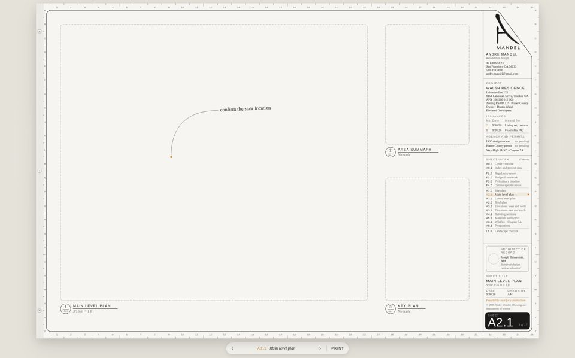
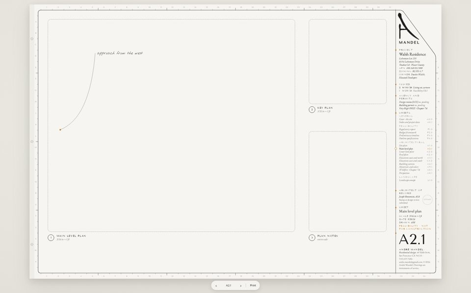
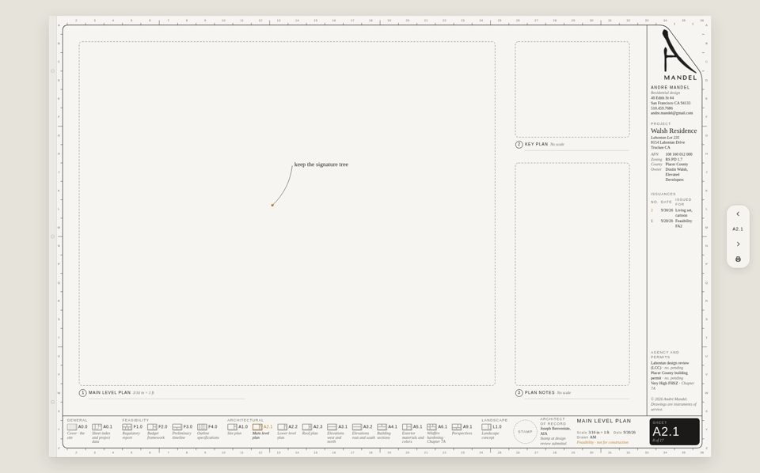
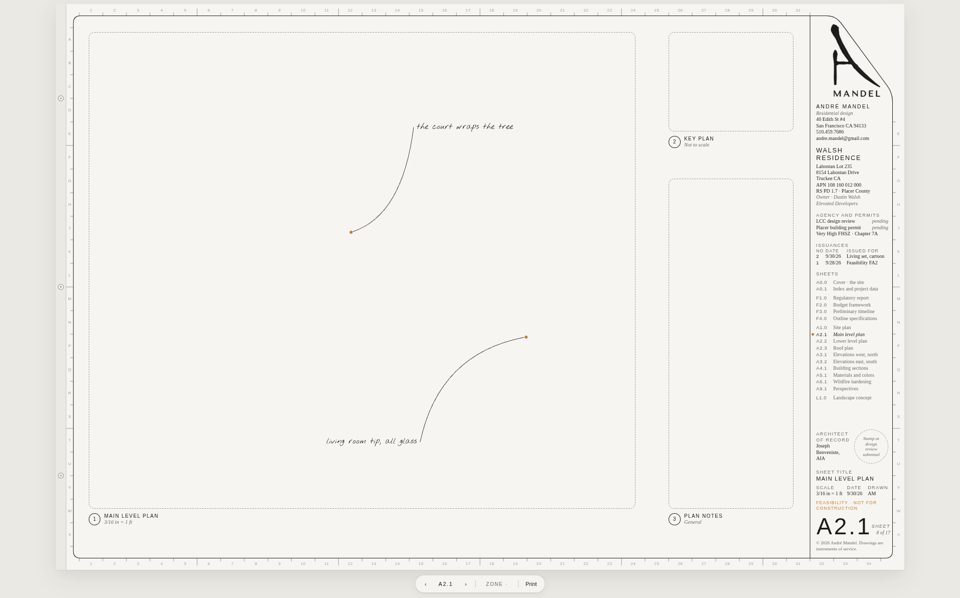

OPTION 1
FLUSH STRIP
Your V1, refined. The corner cut is set off the logo's own stroke, so the mark holds the corner exactly. Ink sheet number cell.

OPTION 2
FEWER LINES
One vertical rule and nothing else. Orange datum dots mark each section, the index reads like a book's contents, the sheet number stands huge with no box.

OPTION 3
CORNER AND BAND
Logo corner and a narrow right column, with the index as a filmstrip of sheet thumbnails along the bottom band. Wider field for the model.

OPTION 4
LIVING HUD
Notes draw themselves in on every turn, the sheet number flips, issuances build row by row, the index previews sheets on hover. Prints perfectly still.